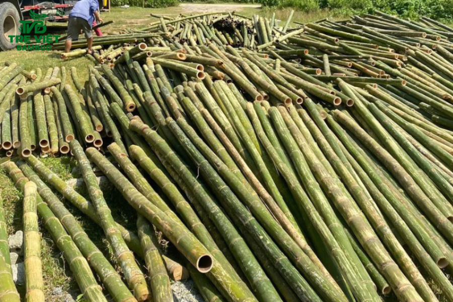
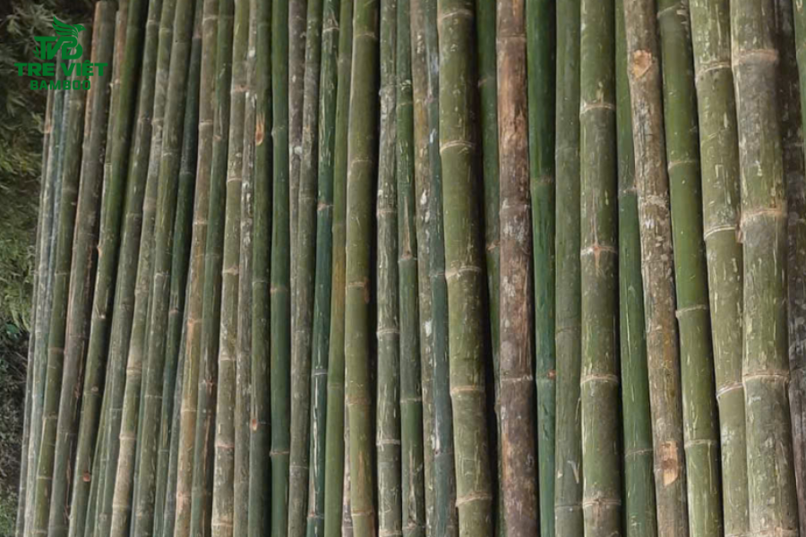
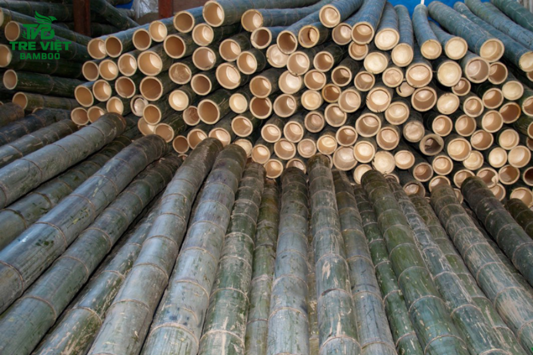
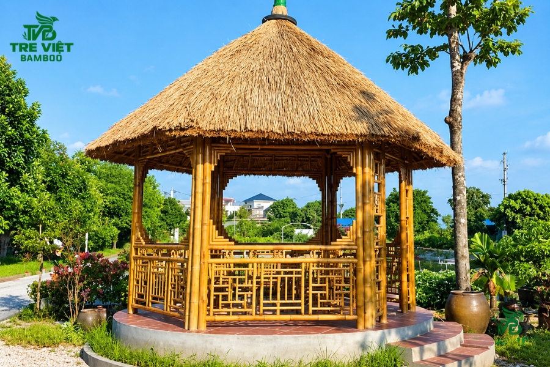
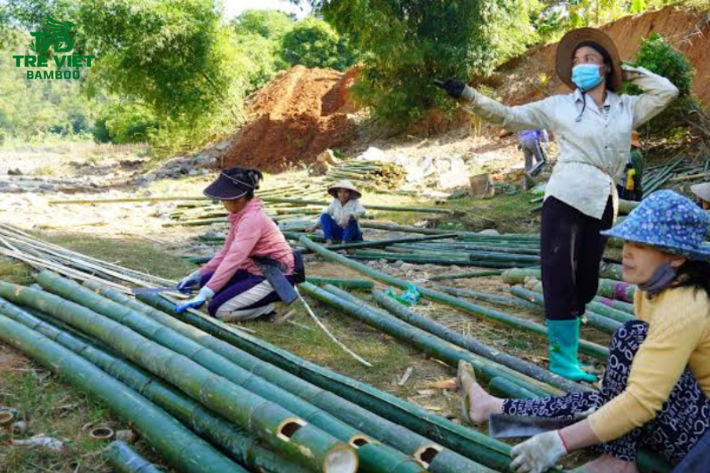
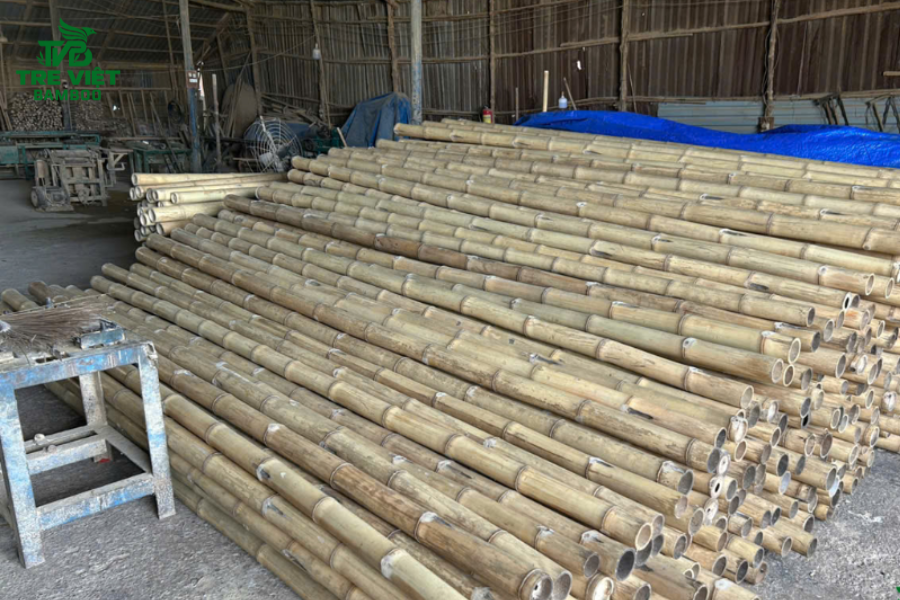
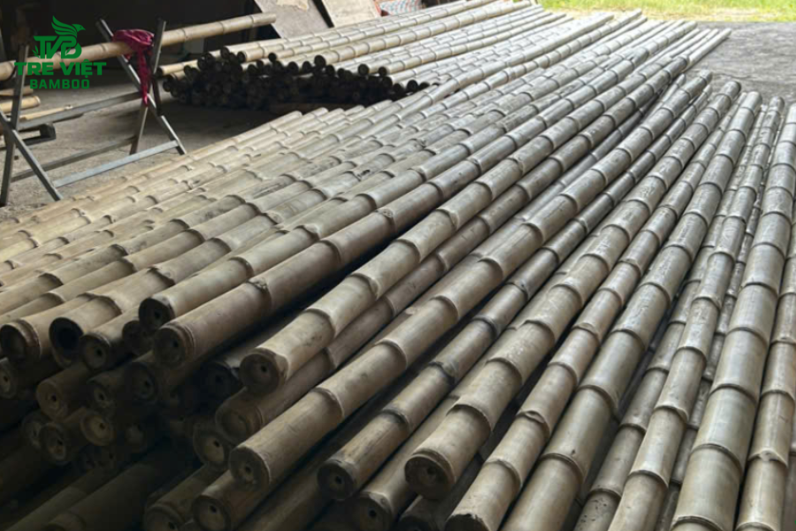

mái lá guộc
Mái lá guộc là sản phẩm tự nhiên được làm từ cây guộc (hay còn có tên gọi khác là cây vọt, cây tế) - Một loài cây thân thảo, dạng dây leo, mọc hoang dã ở các…
Giá bán: Liên hệ

Giá bán: Liên hệ
Cây tre luồng được biết đến là một trong những loài tre có kích thước lớn và giá trị kinh tế, cơ học cao nhất. Nhờ sở hữu thân hình to khỏe, vách ống dày và khả năng chịu lực vượt trội, tre luồng mang đến giải pháp kết cấu bền bỉ, vững chắc, thay thế hoàn hảo cho các vật liệu truyền thống trong nhiều công trình hiện đại. Bài viết này, Tre Việt Building sẽ giúp bạn tổng hợp đầy đủ thông tin về tre luồng, từ đặc điểm, giá trị sử dụng cho đến quy trình khai thác, xử lý. Cùng theo dõi ngay nhé!

Cây tre luồng hay còn có tên gọi khoa học là Dendrocalamus membranaceus Munro hoặc Dendrocalamus barbatus. Loài tre này có kích thước lớn, thuộc họ Hòa thảo. Luồng là giống tre bản địa, tập trung phân bố chủ yếu tại các tỉnh miền núi phía Bắc của nước ta, đặc biệt rất nổi tiếng tại vùng đất Thanh Hóa. Với thân cây to, vách ống dày cùng độ bền cơ học cao, tre luồng chính là nguồn nguyên liệu chiến lược cho ngành xây dựng nhà tre, kiến trúc sinh thái, nghỉ dưỡng và sản xuất công nghiệp.

Để nhận diện và phân biệt chính xác tre luồng với các loại tre khác thì bạn có thể dựa trên những đặc điểm hình thái sau đây:
Kích thước lớn: Tre luồng thuộc nhóm tre lớn, không có gai. Khi trưởng thành, chiều cao trung bình mà tre có thể đạt lên đến 14 - 20m, đường kính thân dao động khoảng từ 8 - 12cm.
Thân và lóng tre: Thân tre luồng tròn, đều, độ thon ít, các gióng dài khoảng 30 - 50cm. Vách thân luồng phải nói là rất dày, điều này giúp tăng cường khả năng chịu lực nén và uốn. Phân gốc cây có các vòng đốt ít nổi rõ, ⅔ thân về phía gốc tròn đều đặn.
Màu sắc và lông nhung: Thân non có lớp phấn trắng bao phủ. Khi già, thân chuyển sang màu xanh đậm hay là xám, đặc biệt có xuất hiện nhiều rêu mốc. Phần gốc cây cũng thường có các vòng lông màu nâu nhung bao quanh mấu.
Măng luồng: Măng có kích thước lớn, vỏ màu nâu đen hoặc là có lông cứng. Thịt măng tương đối dày, ăn giòn, ngon và ngọt.

Trước tiên, về đặc tính sinh học: Luồng là luồng tre mọc thành cụm. Thân ngầm, dạng củ, thưa cây. Cây có khả năng đẻ nhánh rất mạnh vào mùa mưa, hệ thống rễ chùm phát triển sâu giúp cây bám giữ đất cực kỳ hiệu quả. Tỷ lệ xenlulo cao, khoảng 54% và Lignin chiếm khoảng 22,4% tạo nên cấu trúc sợi bên trong thân cực kỳ bền và chắc chắn.
Tiếp theo là đặc tính sinh thái học: Tre luồng ưa khí hậu nhiệt đới ẩm, phát triển tốt trên các nền đất bằng hoặc là chân đồi, đất có đặc điểm tơi xốp và khả năng thoát nước phải tốt. Sức sống của luồng là rất mãnh liệt, thích nghi nhanh với mọi loại điều kiện tự nhiên. Trồng luồng giúp phủ xanh đất trống đồi trọc và quan trọng hơn cả là chống tình trạng xói mòn.
Nhờ cấu trúc tự nhiên, mật độ bó mạch dày đặc, tre luồng sở hữu rất nhiều ưu điểm nổi bật, vượt trội:
Khả năng chịu lực tốt: Nhờ việc sở hữu vách ống dày và đường kính lớn, giới hạn bền khi nén và kéo dọc thớ của tre là rất cao, có thể tương đương với một số loại gỗ nhóm tốt. Chính vì vậy, tre luồng rất thích hợp để dùng làm cột trụ chính hay là xà gồ chịu lực trong các công trình nhà tre trúc.
Độ bền cơ học: Sau khi được xử lý chống mối mọt chuẩn kỹ thuật, tre luồng không còn tình trạng cong vênh, nứt nẻ dưới tác động của thời tiết mưa gió, bão bùng khắc nghiệt.
Tính thẩm mỹ độc đáo: Bề mặt thân tre có màu sáng bóng tự nhiên. Đặc biệt, các đường vân mấu đều đặn, mang lại nét đẹp khỏe khoắn, sang trọng, song vẫn giữ được nét gần gũi, mộc mạc cho không gian kiến trúc tổng thể.

Hiện nay, tre luồng được ứng dụng rộng rãi trong rất nhiều lĩnh vực đời sống:
Xây dựng kiến trúc và nhà tre: Tre luồng thường được các nhà thầu, chủ đầu tư dùng làm cột chính, kèo, xà gồ, dầm chịu lực cho các công trình nhà hàng, spa, resort, bungalow, khu du lịch sinh thái, cũng như phục vụ trong ngành giao thông vận tải, chèn hầm lò,...
Trang trí nội - ngoại thất: Lĩnh vực trang trí - nội ngoại thất cũng không thể thiếu sự góp mặt của tre luồng. Tre có thể dùng làm vách ngăn, ốp trần, làm hàng rào, lan can hay là giàn hoa sau sân vườn.
Sản xuất công nghiệp: Ép tấm ván sàn tre từ tre luồng (vừa đẹp vừa bền bỉ, là mặt hàng xuất khẩu có giá trị kinh tế cực kỳ cao), làm đồ nội thất cao cấp, chất lượng (giường tủ, bàn ghế, kệ trang trí,...) và các sản phẩm đồ thủ công, mỹ nghệ. Nhìn chung, các sản phẩm từ tre luồng đều rất được đón nhận và yêu thích.

Để đảm bảo nguồn nguyên liệu đầu vào đạt chuẩn chất lượng cao cho các công trình xây dựng, quy trình từ khâu canh tác, đốn hạ đến xử lý sơ chế tre luồng đều phải tuân thủ nghiêm ngặt các tiêu chuẩn kỹ thuật sau:
Thông thường, tre luồng thường được trồng tập trung để đảm bảo điều kiện ánh sáng, độ ẩm không khí và đất cho cây phát triển xanh tốt, khỏe mạnh. Đồng thời cũng giúp tránh gió bão làm gãy măng, trốc gốc.
Tre Việt Building tuân thủ nghiêm ngặt quy phạm khai thác. Chúng tôi chỉ đốn hạ những cây luồng đã đạt độ tuổi từ 3 - 4 năm trở lên (lúc này cây vừa, có màu xanh sẫm), hoặc tốt hơn là cây già (từ 5 năm trở lên, da xám, xuất hiện nhiều rêu mốc và thịt màu đỏ hồng). Điều này giúp đảm bảo tre luồng có độ cứng chắc nhất định. Và quan trọng hơn hết là không làm ảnh hưởng đến sự sinh trưởng và sinh thái của rừng xanh.
Trong tự nhiên, tre luồng thô chứa rất nhiều chất dinh dưỡng nên rất dễ bị mối mọt gây hại. Nguyên liệu sau khi khai thác sẽ được đội ngũ Tre Việt Building làm sạch, ngâm tẩm hóa chất chuyên dụng dưới áp lực hay là xử lý nhiệt để triệt tiêu hoàn toàn các mầm mống côn trùng. Sau đó, chúng tôi phơi sấy, hạ ẩm tre luồng đạt tiêu chuẩn kỹ thuật rồi mới đưa vào ứng dụng thực tế.

Mức giá cây tre luồng trên thị trường khá đa dạng. Cụ thể, giá cây sẽ phụ thuộc nhiều vào yếu tố đường kính, chiều dài thân cây và quy trình, kỹ thuật xử lý chống mối mọt. Sau đây là bảng giá tham khảo về giá tre luồng (BÁN LẺ) tại Tre Việt Building mà bạn có thể tham khảo.
|
Loại tre luồng |
Đơn giá |
|
Cây luồng 2m, cây có đường kính 8-10cm |
Từ 70.000 – 80.000 VNĐ |
|
Cây luồng 2m5, cây có đường kính 8-9cm |
Từ 90.000 – 110.000 VNĐ |
|
Cây luồng 3m, cây có đường kính 8-9cm |
Từ 95.000 – 130.000 VNĐ |
|
Cây luồng 4m, cây có đường kính 8-9cm |
Từ 125.000 – 150.000 VNĐ |
Đặc biệt, Tre Việt Building luôn có nhiều chương trình ưu đãi và chiết khấu cao cho các đơn hàng lớn. Quý khách hàng có nhu cầu hãy liên hệ ngay để được tư vấn báo giá, hỗ trợ nhanh nhất nhé.

Nếu bạn đang tìm kiếm nguồn tre luồng chất lượng, được xử lý đúng chuẩn kỹ thuật, có độ bền cao và khả năng chịu lực tốt cho các công trình nhà tre, resort hay dự án kiến trúc xanh, Tre Việt Building là đối tác đáng tin cậy hàng đầu. .
Chúng tôi cam kết:
Thông tin liên hệ:
CÔNG TY TRÁCH NHIỆM HỮU HẠN TRE VIỆT BUILDING
Địa chỉ: 917 Phạm Văn Đồng, Phường Linh Xuân, Thành phố Hồ Chí Minh
Nhà máy sản xuất: Phú Hợp B, Xã Phú Lâm, Đồng Nai.
Điện thoại – Zalo: 087.6915.999
Email: info@treviet.com.vn
treviet23@gmail.com
Mái lá guộc là sản phẩm tự nhiên được làm từ cây guộc (hay còn có tên gọi khác là cây vọt, cây tế) - Một loài cây thân thảo, dạng dây leo, mọc hoang dã ở các…
Giá bán: Liên hệ

Thi công ốp tre trúc trang trí của đơn vị Tre Việt Building đã mang đến những công trình bằng tre rất bền và đẹp tuổi thọ 10 năm cho đến 15 năm.
570.000 ₫

Tre việt Building đơn vị tiên phong đưa vật liệu chống nóng bằng sản phẩm tự nhiên vào thiết kế của mình. trong đó thi công lợp mái lá (lợp guộc) hiệu quả cao
650.000 ₫